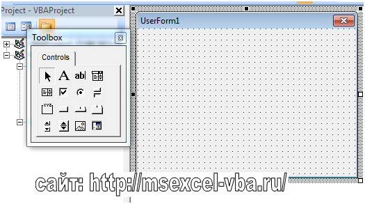
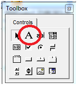
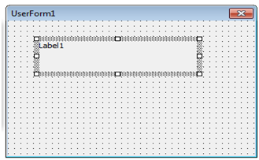

Элемент управления Label
В этой статье мы познакомимся с таким элементом управления VBA как Label – надпись.
Как и UserForm, Label является классом, с наборами свойств, методов и событий, нужно понимать, что большая их часть актуальна для всех элементов, а не только для одного.
И так, после того, как мы добавили в проект форму, рядом с ней должно появиться окно ToolBox, если его нет, то просто в меню View выберите пункт ToolBox.

Рис.1 Панель ToolBox
Хорошо, на панели несколько компонентов, но нам пока нужен только компонент Label.

Рис. 2 Элемент управления label на панели ToolBox

Рис. 3 Элемент управления Label на форме
Пользователь не может изменять этот текст. Чаще всего элемент управления Label используется как строка состояния с объяснением того, что сейчас произошло/происходит/должен сделать пользователь и т.п. Этот элемент управления может использоваться и как пояснение для других элементов управления, таких, как ползунок.
Самое главное свойство элемента управления Label — это Caption, тот текст, который будет выводиться на форме. Большая часть остальных свойств относится к форматированию этого текста или настройке внешнего вида этого элемента управления.
Несмотря на то, что для этого элемента управления предусмотрен набор событий ( Click, Error и т.п.), использовать их не принято: пользователю обычно не приходит в голову, что по надписи нужно щелкать мышью.
Можно также записать код, который изменяет текст, отображенный элементом управления label в ответ на события во время выполнения. Например, если ваше приложение занимает несколько минут, чтобы обработать изменение, вы можете отобразить в label сообщение о состоянии процесса.
Основные свойства перечислены ниже:
AutoSize – определяет, будет ли размер элемента управления Label vba подстраиваться под введенный в нем текст (Caption), или будет фиксированным (Height и Width). Значение true – автоматический размер, а false – фиксированный.
Height и Width – высота и ширина области
Name и Caption – имя класса Label (как правило, Label1, Label2, …. , LabelN) и текст надписи. Текст можно вводить сразу на поле Label.
Visible – позволяет скрыть (false) или отобразить компонент (true)
WordWrap – позволяет разрешить (true) или запретить (false) перенос текста на новую строку, если он не умещается в пределы области Label vba.
FontSize – определяет размер текста, как не странно, но в окне Свойств его нет.
ForeColor – цвет текста.
Примеры можно скачать здесь: пример1, пример2, пример 3
Обзорная статья про элементы управления предоставлена здесь